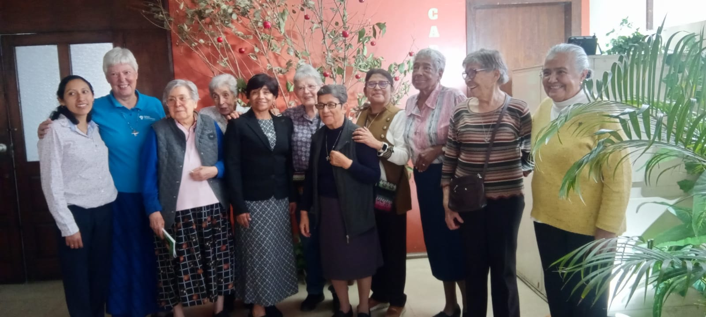

Las Hermanas Auxiliadoras somos mujeres consagradas que, inspiradas por Eugenia Smet (María de la Providencia), buscamos hacer presente el amor de Dios en la vida cotidiana.Nuestra misión es acompañar a las personas, especialmente a quienes atraviesan momentos de dificultad, soledad o exclusión, ofreciendo cercanía, escucha y apoyo para que puedan descubrir esperanza y sentido en sus vidas.
Vivimos atentas a la realidad del mundo, reconociendo en cada persona una dignidad única y una historia que merece ser acogida. Desde ahí, compartimos la vida con otros y colaboramos en la construcción de relaciones más humanas, justas y solidarias.
Nuestra vocación también nos lleva a vivir una profunda dimensión espiritual, confiando en que Dios actúa en toda historia humana. Por eso, nuestra misión se extiende como un servicio de reconciliación y esperanza que abraza la vida en todas sus etapas.
Realizamos esta misión a través de distintas acciones: el acompañamiento personal, la formación, la educación en la fe y el trabajo con comunidades, caminando junto a quienes buscan crecer, sanar y encontrar su lugar en el mundo.
Así, desde lo sencillo y lo cotidiano, queremos ser signo de esperanza, construyendo comunidad y sembrando vida, fe y amor.